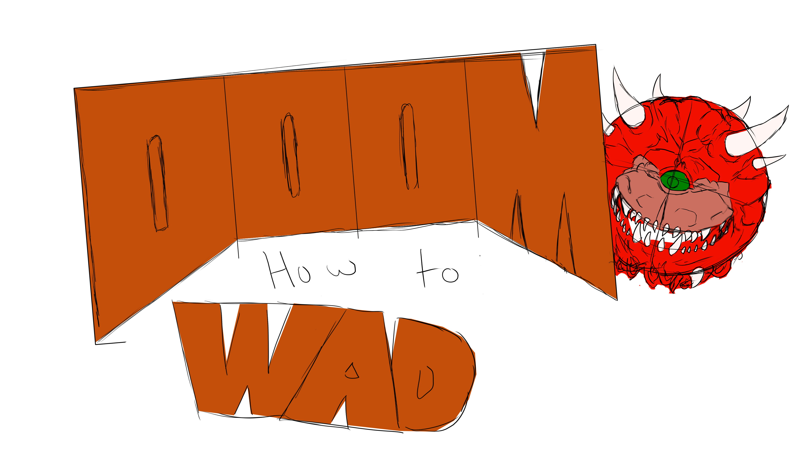

Doom WAD Building Guide
By: Aidan Clinard
Section 11
S
This website is intended to inform people what can make maps in doom fun and engaging with interesting and unique combat experiences.
It will demonstrate how enemy placement and terrain can influence gameplay in a level and how to use it to your advantage.
Page 1: Terrain
The first page will include tips and tricks on how to make your map interesting to navigate, and what to avoid when creating your setting.
It will cover topics like map puzzles, arenas, and atmospheric interiors.
Page 2: Resource Management
The second page will cover how to limit the amount of resources you give the player in order to create tension during a level.
It will also go over how and when to give better weapons to the player, and how doing so will affect the gameplay.
Secrets will also be covered here, since secrets typically include items or powerups.
Page 3: Demon Placement And Utilization
Demon placement is very important in making levels fun and engaging. The website will go over what makes an encounter both fair
and challenging. It will cover the different alternate categories of maps such as slaughter maps and the more standard style of maps.